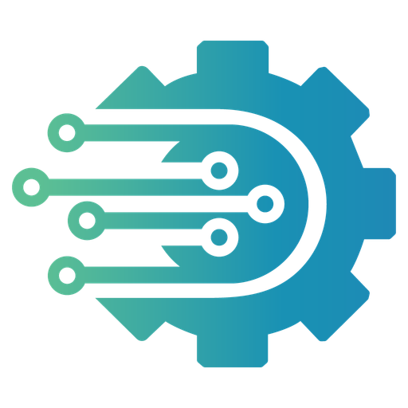

Local TCP Bridge is a Native Messaging host that lets web apps stream raw bytes straight to local hardware, like ESC/POS thermal printers, over a secure, millisecond-latency binary protocol. No cloud hop, no print server.
Browsers deliberately can't open raw TCP sockets. Local TCP brings that capability back, safely, by pairing a lightweight Chrome extension with a tiny Node.js native host that does the socket work on your machine.
Native installers for macOS .pkg, Windows .exe & Linux .run. No terminal needed. The installer registers everything and auto-installs Node.js if it's missing.
Chrome's Native Messaging sandbox plus a configurable origin allowlist, so you can lock the bridge down to only your own web apps, straight from the popup.
Streams raw ESC/POS bytes with millisecond precision. Concurrent jobs are correlated by reqId and serialized per socket, so byte streams never interleave.
Works with Flutter Web, React, Vue, Angular or plain JS. The content script bridges every page, with no SDK and no globals to load.
Runs through the system node binary. That is exactly what keeps it working under macOS 15/26 Local Network Privacy, where an unsigned standalone binary gets silently blocked from the LAN.
Under MV3 the service worker can sleep. PRINT/SEND re-dial the socket automatically, so printing keeps working with no manual reconnect.
Each request is tagged, gated, and correlated on its way from the page to the printer. The response then travels the same wire back.
Sends a window.postMessage tagged with a unique messageId to the injected content script.
Forwards the message to the extension background, then posts the reply back scoped to the page's own origin, never a * wildcard.
Checks the origin allowlist, then relays the request (tagged with a reqId) to the Native Messaging host over a single persistent port.
Opens a raw TCP socket to your hardware on port 9100, writes the bytes, and echoes the reqId back so concurrent jobs never cross wires.
Use plain JavaScript on any web framework, or the official Flutter package for one API across web, mobile & desktop. Always check availability first with CHECK_BRIDGE.
A tiny promise-based wrapper. No imports and no globals: the content script relays window.postMessage to the host.
export class LocalTcp {
constructor({ timeoutMs = 30000 } = {}) {
this._pending = new Map();
window.addEventListener('message', (e) => {
const d = e.data;
if (!d || d.source !== 'localtcp_res') return;
const p = this._pending.get(d.messageId);
if (!p) return;
clearTimeout(p.timer);
p.resolve(d.response);
});
}
/* → {success, connected, version} */
checkBridge() { return this._send({ action: 'CHECK_BRIDGE' }); }
print(host, port, bytes) {
return this._send({ action: 'PRINT', host, port, data: bytes });
}
}Encode ESC/POS bytes with any encoder, confirm the bridge, then send a plain array.
import EscPosEncoder from 'esc-pos-encoder';
import { LocalTcp } from './localtcp.js';
const printer = new LocalTcp();
// 1 · make sure the bridge is ready
const bridge = await printer.checkBridge();
if (!bridge.connected) return alert('Install Local TCP first.');
// 2 · build the receipt
const data = new EscPosEncoder()
.initialize().align('center').bold(true)
.line('ALGORAMMING CAFE').newline().cut()
.encode();
// 3 · print a PLAIN array, then close
await printer.print('192.168.1.50', 9100, Array.from(data));Array<number>, using Array.from(uint8array). A raw Uint8Array doesn't survive the extension's JSON message hop and arrives malformed.The official package auto-detects the platform: on web it routes through this extension; on mobile/desktop it opens a direct socket. Your code is identical everywhere.
dependencies:
flutter_esc_pos_network_universal: ^1.1.0| Platform | Transport | Extension? |
|---|---|---|
| Android · iOS · Win · macOS · Linux | Direct TCP | Not needed |
| Web | This extension | Required |
printTicket handles connect → print → disconnect. Give web extra timeout to wake a sleeping Wi-Fi printer.
final printer = PrinterNetworkManager(
'192.168.1.50', port: 9100,
paperSize: ThermalPosPrinterPageSize.size80mm,
timeout: const Duration(seconds: 30),
);
final g = Generator(PaperSize.mm80, profile);
final bytes = <int>[
...g.text('ALGORAMMING CAFE',
styles: const PosStyles(bold: true)),
...g.feed(2), ...g.cut(),
];
final result = await printer.printTicket(bytes);
printer.dispose(); // closes socket / removes web listenerprintWidget(context, child: …). It renders to a bitmap and sends it as a single ESC/POS raster image, which is perfect for logos and QR codes. Package: flutter_esc_pos_network_universal.The full contract for any client. Post to window with source: "localtcp_req" and a unique messageId; the response returns on a message event with source: "localtcp_res" and the same id.
| Field | Type | Notes |
|---|---|---|
source | string | must be "localtcp_req" |
messageId | string | unique id, echoed back |
action | string | see actions below |
host | string | printer IP on the LAN |
port | number | default 9100 |
data | number[] | ESC/POS bytes, a plain array |
readTimeoutMs | number | optional; wait for a device reply |
| Field | Type | Notes |
|---|---|---|
success | bool | overall result |
connected | bool | CHECK_BRIDGE: host reachable |
version | string | installed host version |
bytesSent | number | PRINT / SEND |
data | number[] | bytes read back on readTimeoutMs |
error | string | present on failure |
CHECK_BRIDGECONNECTPRINTSENDDISCONNECTPING
A high-level alias is also accepted: { type: "LOCAL_TCP_PRINT", payload: { host, port, bytes, readTimeoutMs } }, where bytes maps to data. Concurrent jobs to the same printer are serialized so byte streams never interleave.
Add the extension, then run the one-click installer for your OS. It registers the native host with every Chromium browser and auto-installs Node.js if it isn't already present. We've selected your platform below.
Install Local TCP from the Chrome Web Store. On first install it opens a setup tab and starts your download automatically.
Double-click localtcp-mac-installer.pkg → Continue → Install. macOS prompts for your password, then the host installs for your user account.
Quit Chrome completely and reopen it. The popup flips to Bridge Linked on its own, with no manual re-check.
Open the popup, enter your printer's IP and port (usually 9100), and hit Test Connection.
node keeps LAN access working under macOS 15/26 Local Network Privacy. If Node isn't installed, the installer fetches it for you.Installed to: ~/Library/Application Support/LocalTCP/index.js · manifest registered in each browser's NativeMessagingHosts/
Install Local TCP from the Chrome Web Store, then download the installer from the popup's Download Setup Kit button.
Double-click localtcp-windows-installer.exe → Install. No admin rights needed; it installs per-user.
Close every Chrome window and reopen. The popup shows Bridge Linked automatically.
Enter the printer IP and port in the popup and click Test Connection.
Installed to: %APPDATA%\Algoramming\LocalTCP\run_bridge.bat · registered under HKCU registry keys
Install Local TCP from the Chrome Web Store and download the installer from the popup.
From your download folder:
chmod +x localtcp-linux-installer.run
./localtcp-linux-installer.runFully quit Chrome/Chromium/Brave and reopen. The popup reports Bridge Linked.
Set the printer IP/port in the popup and press Test Connection.
Installed to: ~/.local/lib/algoramming/localtcp/index.js · manifest registered in each browser's NativeMessagingHosts/
In the extension popup, click Uninstall Setup Kit to download the uninstaller for your OS, then run it. To remove the extension itself, use Remove Extension in the popup.
Open the popup → Uninstall Setup Kit, or download the .pkg above.
Double-click localtcp-mac-uninstaller.pkg → Continue → Install → enter your password → Done. It removes the host and browser registrations.
Click Remove Extension in the popup, or manage it at chrome://extensions.
Run localtcp-windows-uninstaller.exe, or Start Menu → Uninstall Local TCP Bridge, or Settings → Apps → Local TCP → Uninstall.
The uninstaller removes the host files and clears the HKCU registry keys for every browser.
Use Remove Extension in the popup, or chrome://extensions.
From the popup → Uninstall Setup Kit, or download the .run above.
chmod +x localtcp-linux-uninstaller.run
./localtcp-linux-uninstaller.runClick Remove Extension in the popup, or open chrome://extensions.

Local TCP Bridge is built and maintained by Algoramming Systems Ltd., a software house that specialises in connecting modern web applications with the physical hardware that runs real businesses: point-of-sale, thermal printing, and networked devices.
Local TCP Bridge began as a piece of Algonize, a business platform that needed the browser to print straight to local hardware. Solving that once turned into a tool anyone can use, so we opened it up.
Explore Algonize www.algonize.xyz